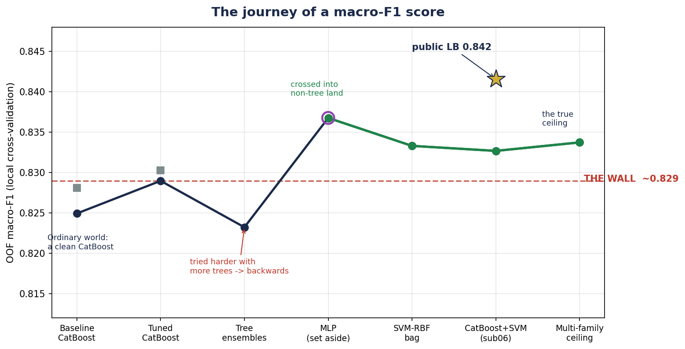
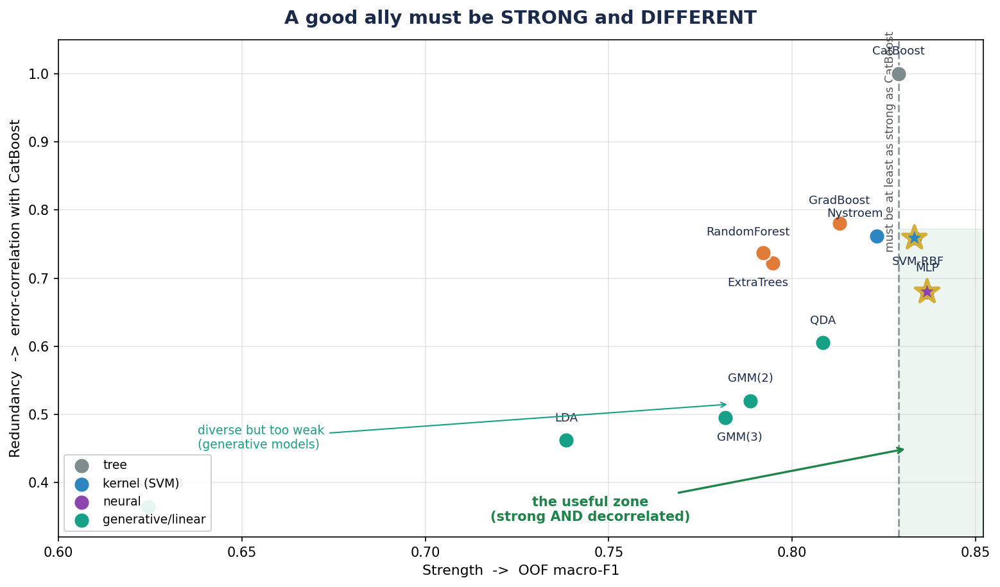
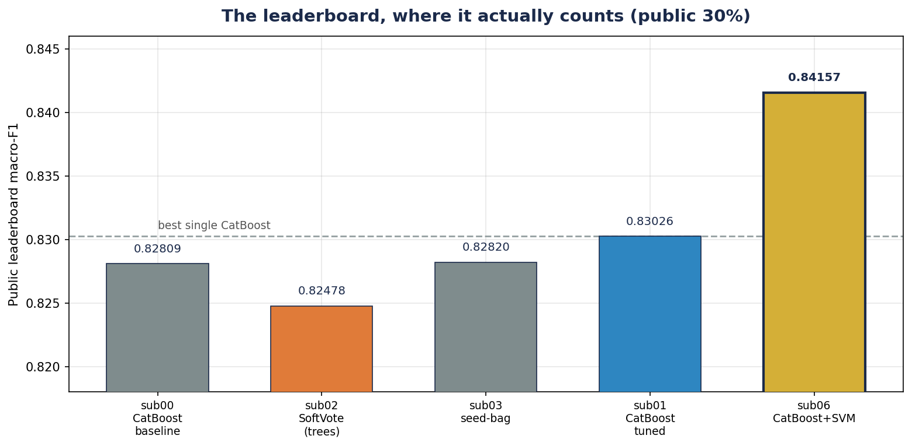

Given physiological sensors from a night of sleep — brain waves (EEG), muscle tone (EMG), eye movement (EOG), heart rate, breathing, blood oxygen — predict the sleep stage of every 30-second epoch: Wake, Light, Deep, or REM. Four classes. 9 000 labeled epochs to learn from, 5 000 to predict. The score is macro-F1: every class weighs the same, so the weakest class decides your fate.
This document is written as a story on purpose. The method matters — but so does why each turn was taken. What follows is the real sequence of decisions, with the real numbers behind each one.
Life was good. I built a clean, honest pipeline: explore the data, lock five fixed cross-validation folds so every later experiment is comparable, engineer a handful of physiologically-motivated features (contrasts between EEG bands, a flag for the half-missing EOG channel), and train a CatBoost gradient-boosted tree. It handled the 50%-missing sensor natively and optimised macro-F1 directly.
It worked beautifully. OOF macro-F1 = 0.82898. On the public leaderboard it scored 0.83026. I tuned its depth, learning rate, regularisation — the defaults won. I had a strong, deterministic, reproducible model. I was, frankly, content.
| Early model | OOF macro-F1 | Deep (worst class) |
|---|---|---|
| CatBoost baseline (21 raw features + missing flag) | 0.82494 | 0.771 |
| CatBoost tuned + engineered features (sub01) | 0.82898 | 0.777 |
Then I tried to go higher. And I couldn’t.
I added more features — band ratios, relative powers, autonomic combinations. Every group made it worse. I searched decision thresholds to rescue the Deep class — the optimum was “change nothing.” I bagged nine random seeds — pure variance reduction, no lift. To know whether any gain was even real, I built a repeated-CV gate: 0.82598 ± 0.00169. That tiny ±0.0017 became my law: any improvement smaller than it is noise, not progress.
So I did what felt natural: I built ensembles. Surely many models together beat one? I combined CatBoost with RandomForest, ExtraTrees, GradientBoosting in a soft vote. I built a six-member ensemble of diverse CatBoosts. I stacked them.
They all made it worse. The soft vote fell to 0.81952. The CatBoost-diversity ensemble dropped to 0.82324 — below the single model. I was working harder and sliding backwards. It was, honestly, demoralising.
| “Try harder” attempt | OOF macro-F1 | vs single CatBoost |
|---|---|---|
| Soft-vote: CatBoost + RF + ExtraTrees + GradBoost (sub02) | 0.81952 | −0.009 |
| Six diverse CatBoosts, equal-weight (sub04) | 0.82324 | −0.006 |
| Seed-bag of 9 CatBoosts (sub03) | 0.82415 | −0.005 |
Every ensemble I could build was made of trees. I didn’t yet see why that was the whole problem.
Instead of asking “how do I make my model stronger?”, I finally asked: “what am I doing wrong?”
I investigated systematically — and the answer was hiding in plain sight. Every single model I had ever tried was a tree. CatBoost, RandomForest, ExtraTrees, GradientBoosting — all of them carve the world into the same axis-aligned rectangles. They share one way of being wrong. So when I averaged them, they all made the same mistakes on the same epochs. An ensemble of clones is still one model.

I left the comfort of trees and tested families with a fundamentally different bias: a neural network (MLP), a kernel machine (SVM-RBF), generative models (QDA, Gaussian mixtures). I measured each on two axes at once — how strong it is, and how different its mistakes are from CatBoost’s.
The neural net broke the wall immediately (OOF 0.83677). But I chose to build my solution around the SVM-RBF — a smooth, curved decision boundary that the staircase trees can only approximate. A grid search over its kernel width, then bagging the best three, gave 0.83331 — already past CatBoost — and, crucially, its errors correlate only 0.76 with CatBoost’s, versus ~0.9 for clones.

Then I married the two families with a simple, fixed, equal-weight average — half CatBoost, half SVM. This became sub06. On local CV it scored 0.83269; the real test was still to come.
Here the story almost went wrong. When I let the data tune the blend weights, the score jumped to a thrilling 0.837. I nearly shipped it.
Then I ran an adversarial re-test — re-fitting everything from scratch on fresh, independent folds. The truth was brutal: most of that “gain” was ~0.006 of pure noise that the weights had memorised and that would not survive on unseen data. A false summit.
From then on, every claim had to survive a paired, leak-free, repeated cross-validation: the same fresh folds for the ensemble and for plain CatBoost, scalers and imputers fit inside each training fold only, no peeking. Under that honest test, the cross-family ensemble beat single CatBoost by +0.0116 macro-F1, positive in every single repeat — roughly seven times the noise floor.
I uploaded sub06. The public leaderboard returned 0.84157 — my best by a wide margin, and higher than its own local score. The wall was gone. I did it.

It even nudged the stubborn Deep class upward — its F1 rose from 0.777 to 0.785. For the first time, the weakest link had moved.
A hero must learn where the real edge of the map is. So I pushed on — honestly. I added the most decorrelated families I could find: QDA and Gaussian mixtures, whose mistakes overlap CatBoost’s by only 0.52–0.61. They were gloriously diverse… and too weak (0.79–0.81) to help a simple average. I let an honest out-of-fold stacker try to exploit them anyway: it squeezed out +0.001 — inside the noise. I engineered features specifically for the SVM, and built a richer, more diverse SVM bag. Both came back negative.
(The neural network remains the one lever measurably above the noise — about +0.003 over any non-neural path — a documented road not taken.)
I lived peacefully behind a wall, mistook it for the edge of the world, struggled, asked a better question, crossed into unfamiliar ground, resisted an easy lie, and came back with something real. I broke through — and I can prove it.
| Stage | Model / idea | OOF macro-F1 | Deep F1 | Note |
|---|---|---|---|---|
| Baseline | CatBoost (raw + missing flag) | 0.82494 | 0.771 | the starting point |
| Tuned | CatBoost + features_v1 (sub01) | 0.82898 | 0.777 | the wall · public 0.83026 |
| Try harder | Soft-vote of 4 trees (sub02) | 0.81952 | 0.765 | worse |
| Try harder | 6 diverse CatBoosts (sub04) | 0.82324 | 0.769 | worse |
| Cross-family | MLP seed-bag (set aside) | 0.83677 | 0.789 | breaks the wall · errcorr 0.68 |
| Cross-family | SVM-RBF grid + bag | 0.83331 | 0.785 | errcorr 0.76 |
| Final | CatBoost + SVM ensemble (sub06) | 0.83269 | 0.785 | public LB 0.84157 |
| Ceiling | Multi-family stack (QDA+GMM) | 0.83374 | — | +0.001 in-sample, within noise — not a fair paired gain |
Eleven Jupyter notebooks (01_eda → 11_multifamily_ensemble), generated from a single source of truth and run end-to-end by one command:
C:/ProgramData/anaconda3/python.exe run_all.py
Five fixed StratifiedKFold folds (seed 42) are shared across every notebook, so all out-of-fold probability matrices are row-aligned and directly comparable. All seeds are pinned; CatBoost is deterministic (bit-identical across runs). The noise floor ±0.00169 comes from a 5×5 repeated-CV gate; the final ensemble’s advantage was confirmed by a paired repeated-CV re-test on independent folds.